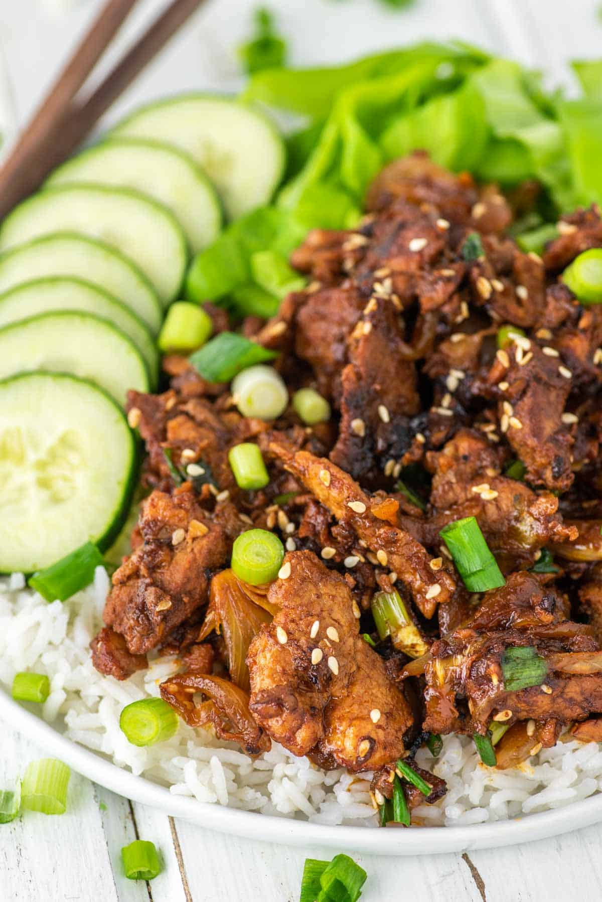

Bulgogi

What is Bulgogi?
Literally speaking, bulgogi (불고기) means “fire meat”. It is often made with tender parts of beef, pork or chicken.
However, in general terms, unless specified, bulgogi is made with beef.
Undoubtedly it is one of the most well-known Korean traditional foods and it has been around for thousands of
years. Naturally, the cooking method of bulgogi evolved over time and it varies by region too.
Ingredients
- Steak
- Soy Sauce
- Sugar
- Green Onion and Garlic
- Sesame Seeds
- Sesame Oil
- Pepper
Preparation
- Place the flank steak in a shallow bowl. In a separate bowl, combine the rest of the ingredients and whisk
until blended. Pour the marinade over the steak — make sure the meat is completely covered. Cover the bowl
and allow the beef to marinate in the fridge for about an hour.
- On a lightly oiled grill set to high heat, cook the beef until it's charred and completely cooked through.
This should take about 1 or 2 minutes on each side.